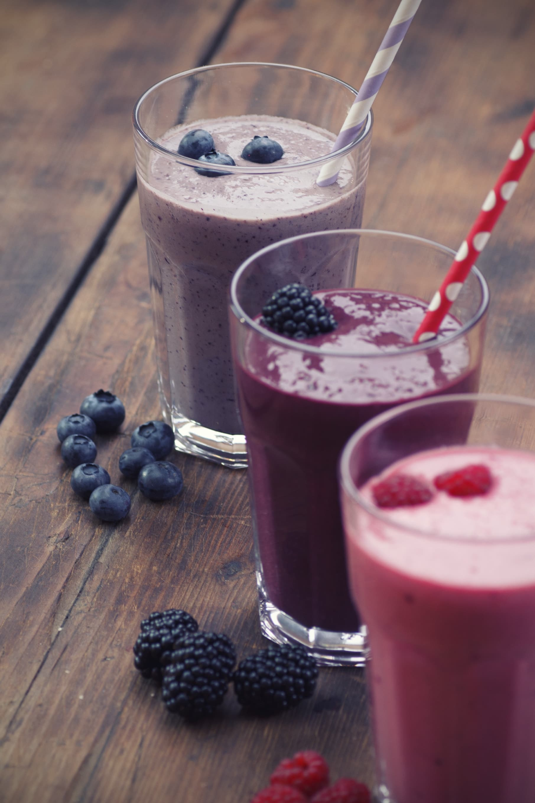

A smoothie is a beverage made by puréeing ingredients in a blender. A smoothie commonly has a liquid base, such as fruit juice or milk, yogurt, ice cream or cottage cheese.

Price- ₦800
go back home